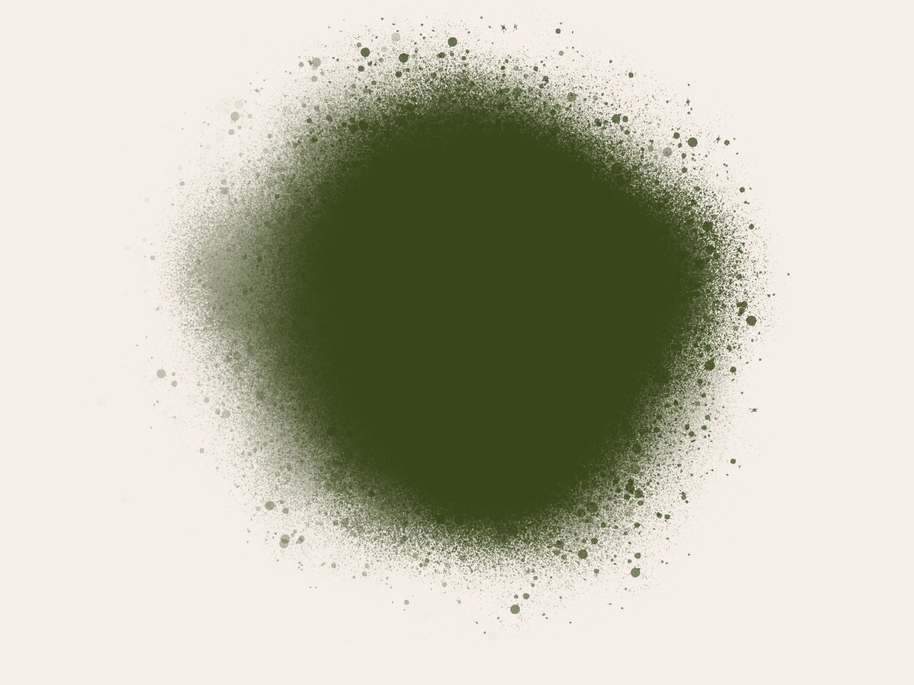
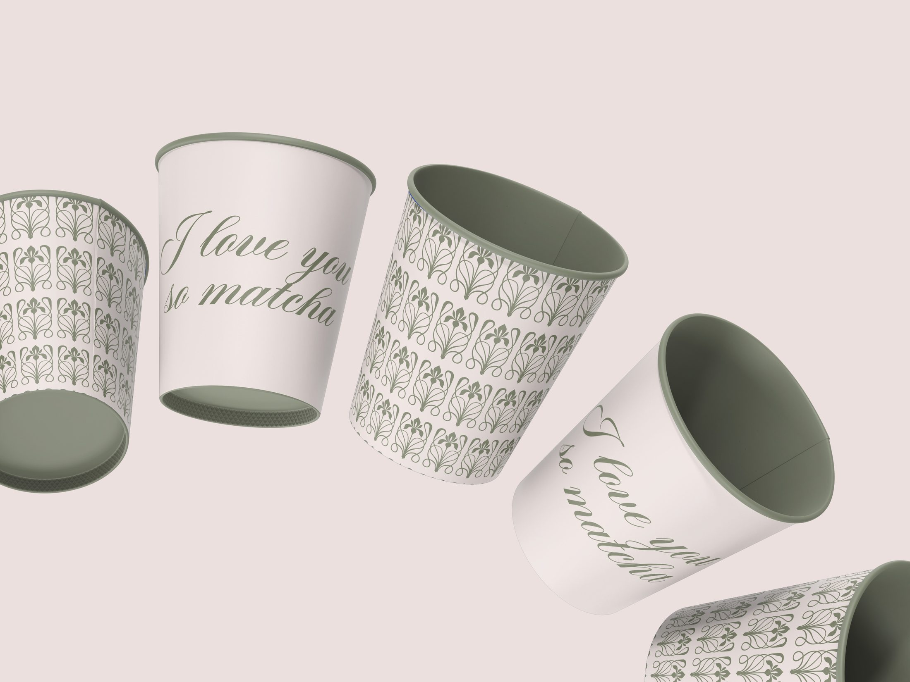
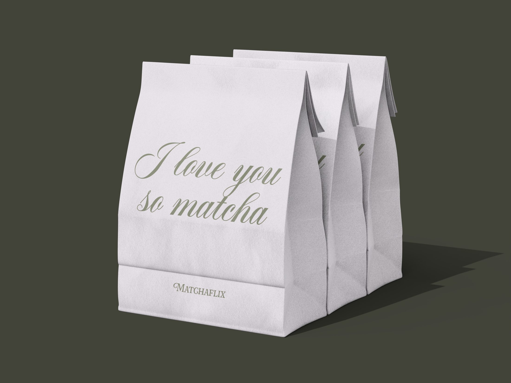
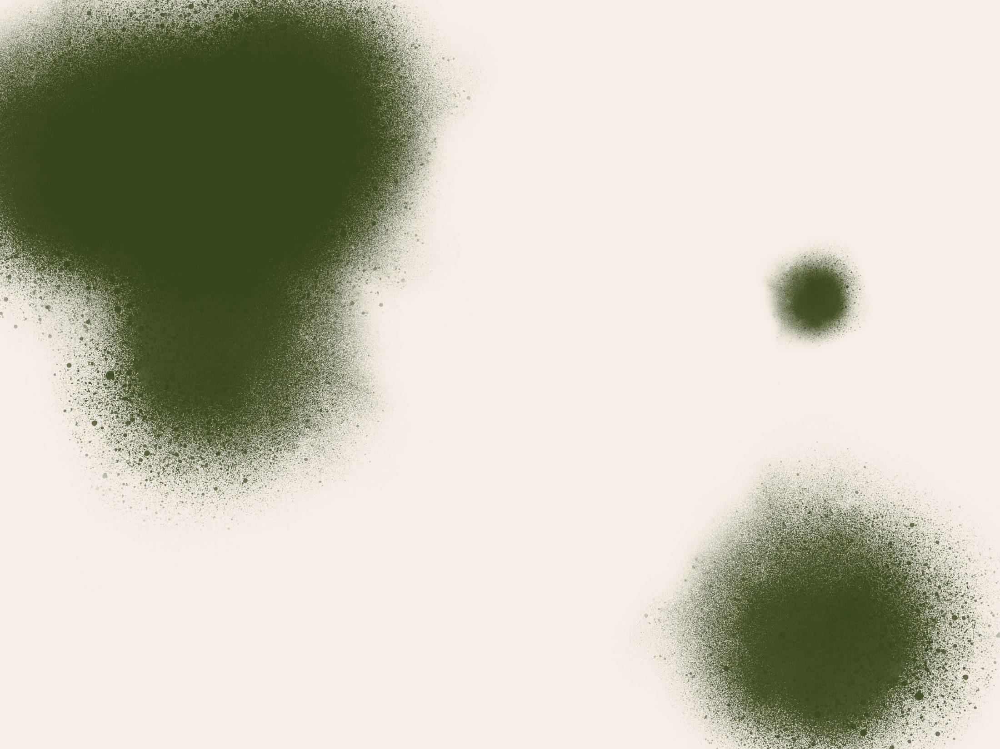
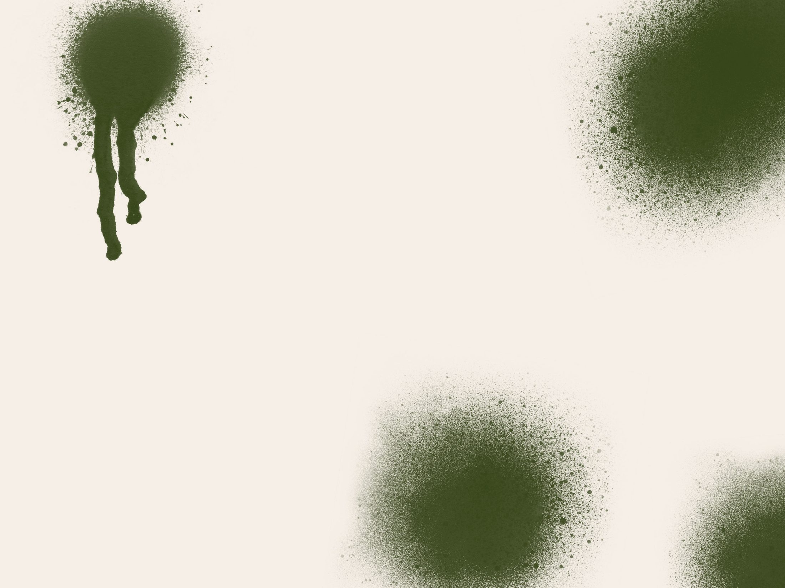
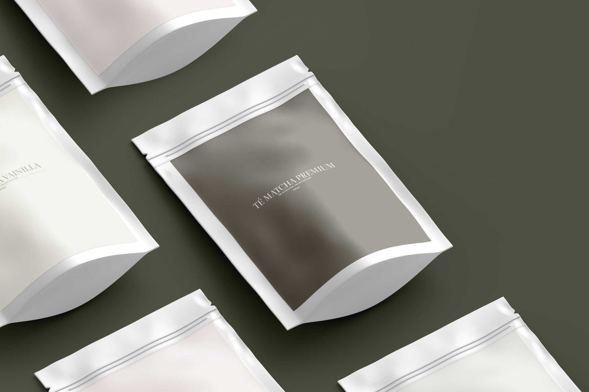
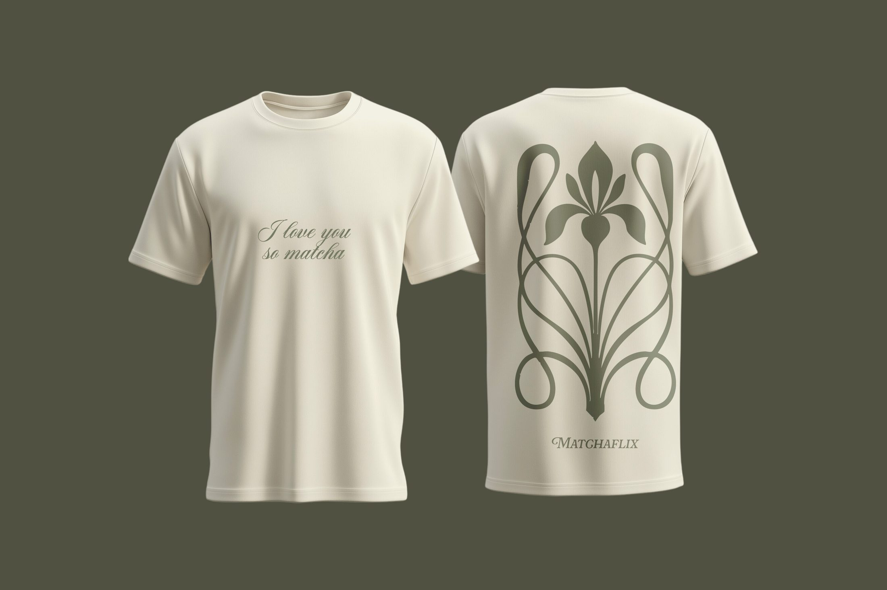

Matchaflix
Concepto
Rebranding conceptual de una marca de matcha. La esencia del producto se mantiene; lo que cambia por completo es la manera de percibirla.
Rebranding de una marca de matcha: identidad, packaging y aplicaciones gráficas.








El proyecto
La propuesta lleva la marca al territorio del lujo silencioso: nueva paleta cromática, una tipografía más refinada y un lenguaje gráfico contenido, aplicado de forma coherente en cada punto de contacto. El objetivo es un posicionamiento más premium y contemporáneo, donde el matcha conversa con los códigos visuales del lujo discreto.
Siguiente proyecto